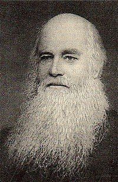

杰姆斯迪克 James George Deck (1807-1884)

诗人小传
一位被教会忽略的杰出诗人
这个世代神的儿女，永远要为着神所赐给杰姆斯迪克弟兄的诗歌恩赐，而感谢神，然而对于他一生所遭受不公平的待遇，对于他的诗歌所蒙受的冷落冤屈，我们也要深觉愧疚。提起上一世代的以撒华滋和查理卫斯理，他们的作品无人不晓，提起芬尼克罗丝贝和海弗格尔，她们的诗更是脍炙人口，可是杰姆斯迪克的名字，和他的杰出作品，却鲜为教会所知。其实他作品的优美，和诗境的高超，决不在任何一位一流诗人之下。那么他的诗歌为什么到今天还被一般教会冷落呢？乃是因为他在盛年之时，因主的带领，加入了当时的普里茅斯弟兄运动，而他所写的诗歌也都编在弟兄们所出版的小群诗集中；因为一般基督教的众教会对弟兄运动怀有成见，这种成见使他们采取了极端敌对的态度——一凡是属灵的作品，只要是从弟兄运动中出来的，即使是对神的儿女有真实的帮助，也一概摒弃不用。许多人也承认他有一些诗歌实在是出于圣灵的杰作，但为了防备弟兄运动。他们叹息说：“可惜这些诗，是弟兄运动中的人写的，我们只有忍痛割爱了。”说到这里，我们不禁要为之扼腕，要到什么时候，神的儿女才能除去狭窄的胸襟，脱去所有的主观成见呢？
迪克的诗歌，无论就生命的经历、真理、诗的灵感、或诗歌本身的文采哪一方面来说，都属上乘之作。他的诗歌才华也是很杰出的，可惜由于上述的原因，使他的作品不能像一般诗人的作品一样，广被教会采用，他的诗歌仅成了部分神儿女的瑰宝。
这无伪之信是先在他母亲里的
诗人杰姆斯迪克弟兄，一八〇二年生于英国的沙弗克的贝里（Bury，St.Edmund，Suffolk），他有一位非常敬虔的母亲，使他的一生大受影响。他母亲每天晚上都要进入内室，用一个小时的时间在主面前为孩子们祷告。因此迪克就像新约里的提摩太一样，从小就承受了那无伪之信，清楚得救了；稍长更承受了莫大的祝福，那燃烧在他母亲心中向神的热切爱火，也燃烧在他心中。我们若明白这个，再看到他以后一生之久，那样地忠诚服事主的情形，就不足为奇了。
提到迪克的母亲，我们就不能不想到神的国多半都是建造在这些默默无闻、平凡却伟大的隐藏得胜者身上。她不仅以自己敬虔的生活，和祷告的生命，影响了迪克的一生；并在她有生之年，亲眼看到了她信心的力量一直影响到她第二代子孙的身上。在她晚年时，她仍一样每天用一段时间带领迪克的孩子们亲近主，学习祷告，进入与主甜美的交通里。
她还有一个女儿华克夫人（Mrs.Mary Jane Walker），也是个受母亲熏陶而一生行在神面前的人。她也是一位诗人，她的诗有几首是非常有名的，一首是“飘流旅客，不要再流荡”（The Wander No More Will Roam），另一首是“当我经过疲乏恐惧野疆”（I Journey Through A Desert Drear And Wild）。她也写福音的诗歌，有一首常被使用的是“耶稣我来信靠祢，用我全心信靠祢”（Jesus，I Will Trust Thee，Trust Thee With My Desire）。
意气飞扬的青年时代
现在我们仍回到迪克弟兄的生平上。他青年时代的经历，很刺激而富有传奇性。他曾怀着满腔雄心从英伦来到巴黎，当时巴黎是世界政局的中心，也是法国最强盛的时候。经过一番严格的考选，他进入陆军军校受训，在拿破仑麾下的一员大将之下，度过了一段军旅生涯。这在人看来是何等意气飞扬，踌躇满志，但神却使他在这段岁月里看清了人类堕落以后的残忍可怖，并看见人性中低贱脆弱的一面；这一切都在战争所带来的残酷痛苦中暴露无遗，使他从前瑰丽前程的梦幻都破灭了。
不久，即一八二四年，他加入了东印度公司，被派到印度担任步兵军官。在那里，他又经历到人性黑暗堕落的另一面，满了欺压诡诈的罪恶生活，使他的良心大受责备而且痛苦。他因着这一切可怕的罪行极其真切地痛悔迁过。他因怕自己再犯，就定下许多自律的规条，盼望在这罪恶深海中能活出新的生命样式来。
砥砺自强反而引他进入痛苦的灵肉争战中 经过了长期里头的争战，他终于认识了人在律法之下软弱无能，一无是处的光景，像保罗一样，耗尽了天然力量，和己生命、罪恶权势交战，彻底失败了，只得颓丧叹息说：“在我肉体之中，没有良善。因为立志为善由得我，只是行出来由不得我……”“我是卖给罪了。”他原先所立的规条反而成了束缚他自己的桎梏，使他十分痛苦失望。这一连串的失败反而叫这个罪恶囚奴的灵魂苏醒过来，认识惟一的拯救惟有在基督耶稣里才能找到。—八二六年他返回英国，当时他真是身心交疲，对于人生前途也灰心极了，但却是他属灵的转机到了。
救主显现带来荣耀的释放
那时，他的另一个姊姊克雷拉带他去聚会，那天讲台所传讲的话语充满了神的能力，好像两刃的利剑，刺入剖开他的心，救主在十架上流血的大爱震撼了他，并且熔化了他的心，使他再一次流泪回到救主的脚前，将自己完全奉献给主，愿意以余生来完全跟随主的脚踪行，为神的国赢得灵魂，归给基督。他的作品中，有一首杰作，正好说出了他那一次在主面前的启示和经历：
此时何时孤单之时（O Solemn Hour）
（一）此时何时！孤单之时！四围都是黑暗！
天上的神独生之子，以人血肉代人受死，这是何等悲惨！
荣耀的主钉十字架！生命的王受人倾轧！
（二）哦，这样的神、人，生、死，真是奇中之奇！
这是中心！两个永世莫不举目而顾、而视
祢这当受赞的！
哦，主耶稣，祢十字架乃是我的永远美家！
（三）哦，当我们看那木头，心中何等感动；
爱的化身死在髑髅！哦，怎能不又喜又愁，
看祢这样苦痛！
我们心裂听祢呼祈：“以利，拉马撒巴大尼！”
（四）哦，神，我们真是该死，该受祢的忿怒；
但祢施恩，使祢爱子为我受苦、担罪、忍耻，
公义杀我救主；
我已与祂同被钉钉，我已与祂在彼丧命。
（五）我们与祂一同得生，与祂从死同苏；
因祂是头，我们是身，我们同祂都是属神，
一同蒙神赐福；
我们原来只配受罚，今却同祂呼喊阿爸。
才德的妇人她的价值胜过珍珠
从他得着这一次重大属灵的转机之后，由于主美好的计划，他与一位传道人的女儿，一位敬虔的姊妹结婚。他当时没有想到，这个安静爱主的青年女子，是神国中隐藏的得胜者，在他以后一生的事奉中，给他深远的帮助。婚后，他又重返印度，但这一回他再来东方和从前完全不同了，因着主的恩典，他是个新的人了。主的爱充溢在他魂间，他就得以在四围可怕的环境中，面对傲慢的人群，为主作美好的见证。他不放过任何机会，在同事官员中间，放胆传讲基督；主也大大地使用了他，得着了许多人归向基督。他在这一段岁月里，打下了美好属灵的根基，有一首他的诗歌，正好说明了他此时的学习和认识：
哦，主耶稣，我心喜乐（O Jesus，Lord！’Tis Joy to Know）
（一）哦，主耶稣，我心喜乐，因祢为我所历坎坷，
现今已经过去；
祢的工作都已得胜，祢今就是坐享其成，
被神荣耀高举。
（二）祢的圣首曾被芒剌，现今已得荣冕装饰，
祢坐父的座位。
哦，主，我们真赞美祢，我们永要虔诚拜礼，
并说：“惟祢是配！”
（三）祢在那里是作元首，等祢肢体也同接受
祢所有的一切
祢的荣耀和祢宝座，祢的权柄和祢天国；
因为祢我联结。
（四）主，祢快乐，我们也乐；因祢得胜，我们唱歌；
因为祢我合一。
现今在此受苦任劳，何等欢欣，当我想到
宝座是属于祢。
主的呼召——为这呼召不惜付出任何代价
经过这一段时间的训练后，他属灵的膀臂逐渐强壮有力了，跟随主的心志也越过越坚定。一八三五年他蒙主呼召来专一事奉祂，他就辞去工作回到英国，经过一段时间，国教接纳他，正式按立他为牧师。然而他后来发现在国教里有许多制度和教训，叫他清洁的良心，无法在神面前过得去。他说：“我再三地回到圣经中去寻找，也找不出任何的根据能支持这样的教训和说法。”“我花了很大的代价，期望我自己能适应国教，并在国教中做一个忠心而标准的传道人，但我却越发现国教里头的一些制度和教训，和神的话背道而驰，我该怎么办呢？”这件事实在是厉害的试炼，教会攻击他，同工误会他，亲友给他压力，前途更是一片茫茫，主好像没有给他开一点门路；反而叫他看见，若是脱离国教，过一个绝对顺服主、只讨主喜悦的生活，所要付出的代价是何等地大，所要受的试炼是何等地可怕。为此他一直犹豫挣扎，不断地说：“我究竟怎么办才好呢？”他的妻子及时给了最扶持他的话：“无论在哪一点上，你若相信这是神的旨意，你就该不惜任何代价去遵行它才对！”
诗人当时最无法接受的教义就是“受浸即重生”（Baptismal regeneration）的教训。他说，浸礼本身不能叫人重生。从下面这首诗，我们可以看见，他实在是一位认识受浸的属灵实际的人。
围绕主墓（Around Thy Grave）
（一）主耶稣，我们聚集在祢墓的四围，
口中歌唱心欢喜，见证祢的作为；
我们用信来跟随，追踪祢的道路，
藉这庄严奥妙水，进入祢的工夫。
（二）主耶稣，我们记念祢魂中的苦难，
祢因向我施恩典，曾被波浪冲漫；
为我，祢浸死水中，为我，祢曾流血，
为我，祢曾离天庭，为我，祢曾命绝。
（三）哦，主，祢今已复活，黑暗已成往事，
现今祢已登宝座，活着，永不再死；
罪、死、阴府祢毁尽，我也同祢得胜，
因祢是我的生命，我是坐享其成。
（四）我今受浸归祢死！承认与祢同钉，
我也与祢同复活，与祢荣耀有分；
撒但、世界和罪恶，今都不能摸我，
我今同祢作旅客，同祢为神生活。
在基督教里，许多属灵的事情，都变为仪文，甚至沦为神学家争论的焦点，属灵的实际完全失去了。然而在诗人身上、在他的诗歌里，这些都恢复了。下面这首诗是弟兄们在擘饼聚会（这种聚会被一些神学家称为神恩典的工具—一领圣餐）中最喜欢唱的，实在让我们摸着了基督率领众子进入父前的喜乐，说出了“圣餐”的属灵实际。
阿爸，父阿，我们现在（“Abba，Father”，We Approach Thee）
（一）阿爸，父阿，我们现在因主到祢面前来；
祢的儿女到此聚集，愿得应许的福气！
祂的宝血已洗我们，我们藉祂来得恩；
祢灵也已指教我们，呼喊阿爸近祢身。
（二）我们从前好像浪子，离祢流荡真无知；
但祢的恩比罪更多，拯救我们脱灾祸。
给我们穿救恩衣裳，给我们坐祢席上；
我们快乐，祢也欢喜，因祢恩典深无比！
（三）祢用为父的爱亲嘴，表明祢赦浪子罪；
祢宰肥犊，祢使我们永远与祢不再分。
“我们理当欢喜快乐”，我们听祢如此说，
“因我儿子死而复活；曾经失去又得着。”
（四）阿爸，父阿，我们赞祢，祢的慈爱真希奇！
天上天军因着我们，也要希奇祢大恩。
不久我们都要聚集，在祢座前来温习：
阿爸的爱何等丰富，阿爸的名何宽恕！
为基督丢弃万事如同粪土
终于诗人作了他一生最伟大的决定，毅然决然地放弃了不易得着的英国国教的正式圣品地位，也拒绝他们所供给一切养生的保障，而绝对地来跟随主。这段日子里，他非常孤独，常关在内室，再寻求主的旨意和量给他的道路。他再次将自己献上，愿意作个完全满足主心意的人。他走在向来未曾走过的道路上，一路上满了试炼，他只得凭信而活；而神也实在向他显明了祂对清心跟随主的人，所怀的是何等的慈爱信实啊！这种艰难痛苦的困境，往往成为诗人所写出最优美诗歌的灵感。下面两首十架道路经历的诗歌，是他诗中的上乘之选：
哦，主，我们今想到祢（O Lord！When We the Path Retrace）
（一）哦，主，我们今想到祢在世所历路程：
祢以恩爱对待群黎，祢以忠诚对神。
（二）祢爱虽然被人辜负，显为比死更强；
刺祢的枪，不过引出血水，洗人天良。
（三）祢虽自己常经忧患，祢却到处行善；
虽然祢的路途艰难，祢却不想怨叹。
（四）四围不忠，祢却赤忠；黑暗，祢却光明。
父的喜乐，祢心所重，从未违祂命令。
（五）不因撒但诡计摇动，不顾苦难损失；
祢的行径，无人同情，孤单一直到死。
（六）我们不禁奇祢谦卑，盼望能以像祢；
主，我们愿学祢低微，因这里有安息。
当我们今天来读这样诗歌的时候，都可以感觉到神荣耀的灵住在那踏着十架道路、面如坚石往前的人身上。下面一首更为优美：
主耶稣，当我们想到祢（Lord Jesus！When We Think of Thee）
（一）主耶稣，当我们想到祢的一切恩爱，
我们的灵盼望最好当面见祢丰采。
（二）虽然我们行在野地，寂寞、干渴、骇惊，
左右荆棘，前后蒺藜，四围仇敌陷阱。
（三）我们却从深处着想，知道祢爱价值；
我们因此心里明亮，赞美祢恩不置。
（四）祢是我们生命、力量，盾牌、磐石、诗歌，
无论怎样把祢思想，总叫我们快乐。
（五）可爱的主，保守我们紧紧跟随祢行，
直到我们进入天门，面见祢的荣形。
主必引导他的脚走在神所喜悦的路上
过了一段相当长的时日，他不断地寻求主，终于有一天他读到了一本书，找到了他所要寻找的方向了。他找到写书的那群弟兄们，他们跟他处境相似，而且同蒙一个启示的光照，要寻求基督身体合一的见证，他们所带进的属灵恢复，后来被称作“弟兄运动”。他们同有一个强烈的心志，愿意出任何代价，来持守神话语的完全，并绝对遵行神的旨意和命令。在开始的时候，人数不多，到处遭人排斥、误会和逼迫，但因着他们向主绝对忠诚，终于带来属灵的复兴。当主的工作到达巅峰时，仅在伦敦一处就有一百八十多个聚会。当时他们中间有三句非常有名的话：“回到圣经”、“回到身体”和“回到起初”。诗人既然清楚了主的带领，就不再考虑一切困难，而投入这个恢复主见证的圣灵水流中。曾为他写过简略生平的康那普弟兄说：“在这段期间，约一八三八年，他投入弟兄运动的时候，是他写出最优美作品的开始。”这些诗歌成为神家甚有分量的属灵产业。
在诗人所写的诗歌中，我们可以发现“钉十架的基督”是他所有诗歌的主题与中心。基督的一生，从道成肉身、高举得荣、到荣耀再来，几乎是他所有诗歌的诗题，下面有两首诗是这方面的杰作：
幔子裂开（The Veil is Rent）
（一）幔子裂开！看哪，耶稣站立施恩座前！
手执香炉，馨香如云，荣耀充满圣殿。
（二）祂的宝血，一次永远，座上、座前洒遍！
祂的伤痕，在天宣告，救赎大工完全！
（三）忽闻“成了！”声音传自痛苦流血山丘；
救赎功成，今在父前，长远活着祈求。
（四）“成了！”此声安息我魂，救恩永不败退；
更美祭物，永远祭司，率领进入幔内。
（五）我们既蒙宝血所洒，坦然进入幔内；
施恩座前，完全俯伏，神啊！惟祢是配。
（六）靠着宝血，奉主圣名，扬起无惧祷声；
靠着基督，上达于祢，赞美之歌上升。
这一首诗是根据希伯来书第十章，描写基督宝血的救赎，逼真传神，好像一幅诗中画。下面这首诗被许多诗评者认为是他的代表作：
神的羔羊，我们今要（Lamb of God，Our Souls Adore Thee）
（一）神的羔羊，我们今要来瞻圣容并敬拜；
父的大爱和祂荣耀，从祢身上放光彩。
被造万物一齐宣扬祢的智慧和权能；
天上地下同声欢唱自有永有的尊称。
（二）神的儿子！父的胸怀永远乃是祢居所；
与神同有恩惠，能耐，作神平日的喜乐；
这是何等奇妙怜爱！祢竟撇开祢尊贵，
为了我们从天而来，作神羔羊尝死味。
（三）神的羔羊！我们见祢卧在寒微马槽里；
流浪四方，无家可栖，在祢亲手创造地；
我们也见祢在园中，汗因苦痛成血样；
我们失措，见此恩踪，圣洁无瑕神羔羊！
（四）我们也见祢作牺牲，钉在可诅的树上，
因为我们罪和愚蒙，一切才由祢承当；
哦主，我们为祢的血，满心感激要称扬；
荣耀，荣耀，无尽，无竭，全归于祢，神羔羊！
若有人爱神，这人是神所知道的
从此以后，迪克弟兄就到乡村传福音，教导圣徒明白神的道路。因着他向主的单纯，生命的丰盛，信心生活的绝对，为神的家尽心尽瘁不顾自己，他实在为圣徒也为服事主的人，立下了一个美好的榜样。他最喜欢和圣徒们在一起擘饼、祷告，和他们一同生活，一同事奉。他从不求显扬自己，只是因着主爱的激励，而一生默默无声、努力耕耘，正如圣经所说的：“若有人爱神，这人乃是神所知道的。”当我们想到他一生这样热爱主，就不能不想他的一首名诗：
耶稣我爱这名（Jesus，Thy Name I Love）
（一）耶稣！我爱这名，耶稣我主！
耶稣！远超万名，耶稣我主！
主，祢作我一切，祢外我无基业，
有祢我无所缺，耶稣我主！
（二）祢曾成为人子，耶稣我主！
祢曾替我受死，耶稣我主！
祢爱真是殊优，远超人世所有，
因祢救恩成就，耶稣我主！
（三）我惟因祢得生，耶稣我主！
我惟靠祢得胜，耶稣我主！
我们还怕什么，忧虑、苦难、鬼魔！
因为有祢相佐，耶稣我主！
（四）不久祢要再临，耶稣我主！
我们快要欢欣，耶稣我主！
那时我们见祢，我们就要像祢；
并要永远偕祢，耶稣我主！
他终于经过幔子，朝见他的君王
一八五二年，他的健康日见衰退，就转往纽西兰去，那儿气候对他较为适宜，不久他居然恢复了健康。但一直辛劳陪伴着他的爱妻，却先他息劳了。以后，他在这个岛上又活了三十年之久得为主做见证，直到一八八四年八月。当时的一位弟兄记述说：“他地上的帐棚倾覆了，敬虔的弟兄们，有许多是他因真道所生的孩子，将他安葬在墓园里。大家一同唱着他所写的——一‘主耶稣，祢曾在此站立’。弟兄虽然死了，但是他身上基督的馨香，仍叫人活，藉着诗歌，他也因信仍旧说话。”
诗人的诗歌，在一八五六年出版的“小群”诗歌中，占了八分之一，有四十三首。最后，我们不忍心割爱，仍以他的另两首诗歌作结束。
父阿，久在创世之前（Father，’Twas Thy Love That Knew Us）
（一）父阿，久在创世之前，祢选我们爱无限；
这爱甘美、激励、深厚，吸引我们亲耶稣。
还要保守，还要保守，我们今后永稳固。
（二）虽然宇宙逐渐改迁，但是我神总不变；
祂的爱心，同祂话语，向着我们永坚定。
神的儿女，神的儿女，我们应当赞祂名。
（三）神的怜悯，是我诗歌，我口所夸心所乐；
从始至终，惟有白恩，能得我命感我心。
神爱我们！神爱我们，连祂爱子都不吝！
（四）爱的神阿，我们现在同心歌颂祢奇爱；
直到天上，远离尘嚣，我们仍是要称扬。
但愿荣耀，但愿荣耀，永远归神和羔羊。
这首诗在所有赞美父神拣选之爱的诗歌中，是非常好的一首。
下面一首是讲到主再来的诗：
一点时候（A Little While）
（一）“一点时候”主就回来，我们就要不再流落；
迎接我们归家云外祂所预备天上居所；
与祂同居，见祂荣面，高声歌颂奇妙恩典。
（二）“一点时候”祂就再来，我们须要赎回光阴；
使祂痛心是我悲哀，为祂负轭是我欢欣；
愿我预备，儆醒祈祷，有如仆人等候主到。
（三）“一点时候”所有将过，主赐十架为何推辞？
步祂脚踪，效祂所作，为祂，利益算作损失。
祂的笑脸是为报酬这苦痛的“一点时候”。
（四）“一点时候”求祢就来主，祢新妇盼望已久！
疲倦客旅切切等待，归家高唱永远歌讴；
见祢真体荣耀无比，并要改变完全像祢。